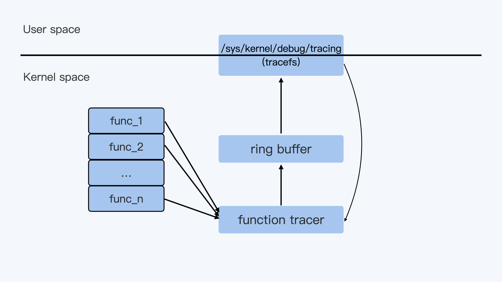
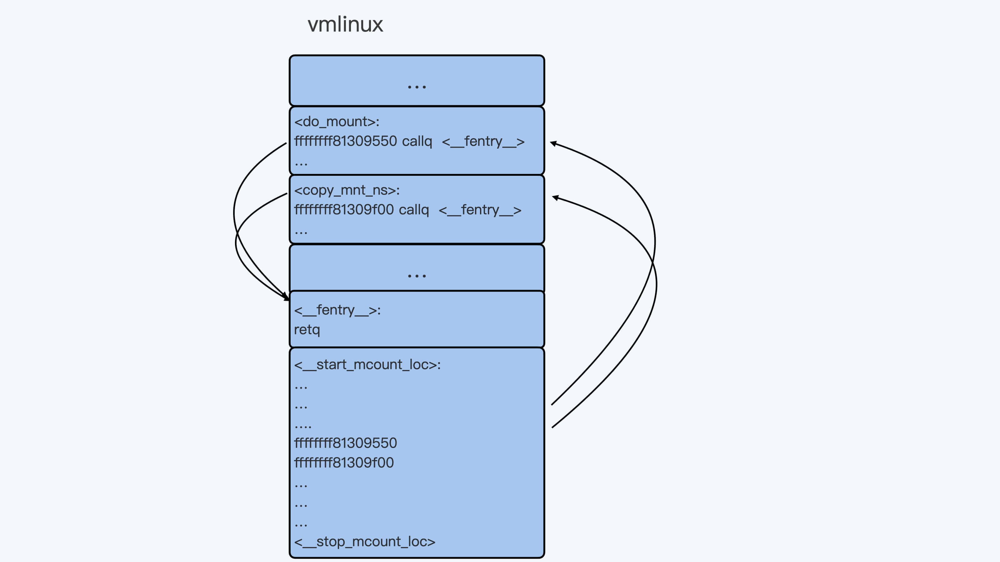
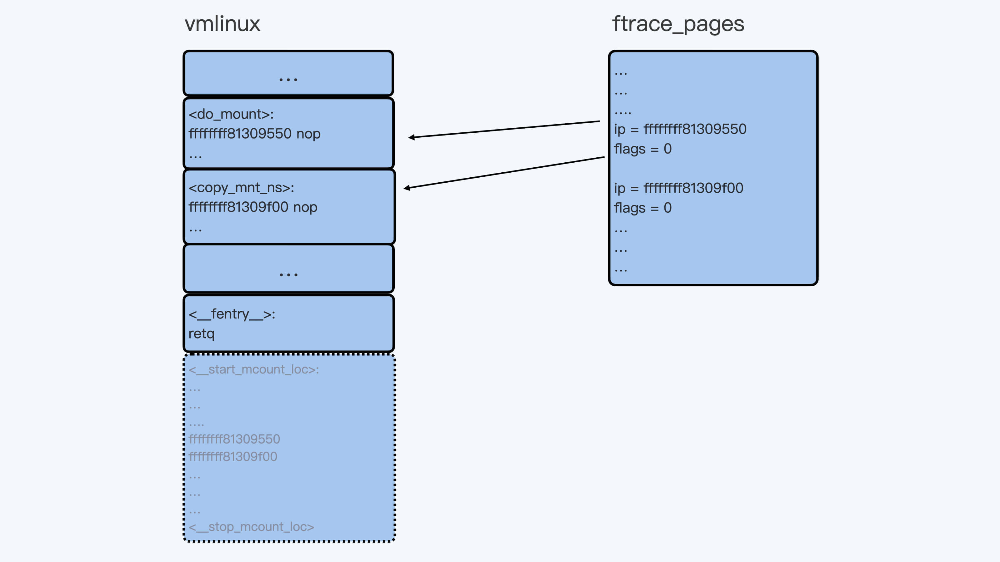
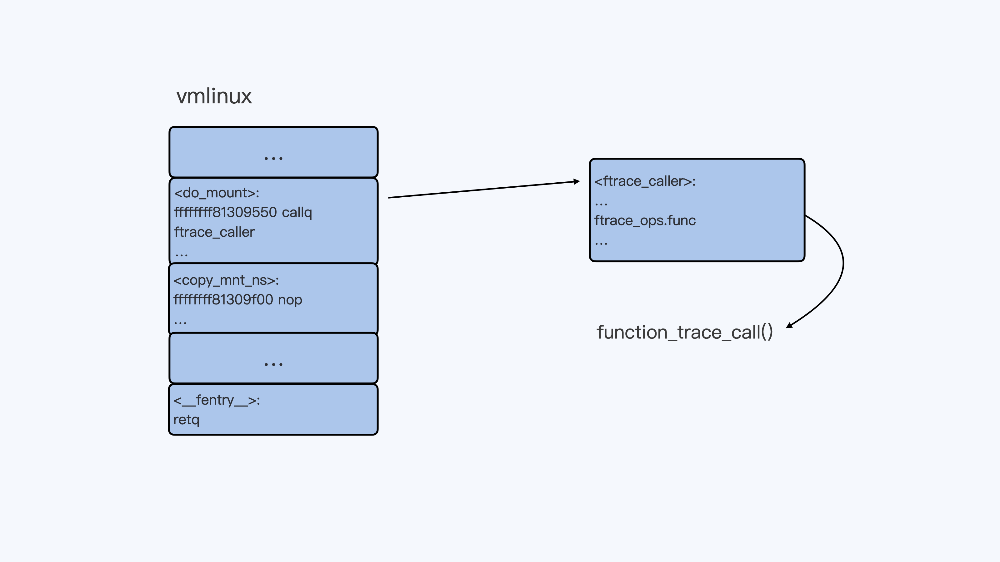

- 00 开篇词 一个态度两个步骤，成为容器实战高手.md.html
- 01 认识容器：容器的基本操作和实现原理.md.html
- 02 理解进程（1）：为什么我在容器中不能kill 1号进程？.md.html
- 03 理解进程（2）：为什么我的容器里有这么多僵尸进程？.md.html
- 04 理解进程（3）：为什么我在容器中的进程被强制杀死了？.md.html
- 05 容器CPU（1）：怎么限制容器的CPU使用？.md.html
- 06 容器CPU（2）：如何正确地拿到容器CPU的开销？.md.html
- 07 Load Average：加了CPU Cgroup限制，为什么我的容器还是很慢？.md.html
- 08 容器内存：我的容器为什么被杀了？.md.html
- 09 Page Cache：为什么我的容器内存使用量总是在临界点.md.html
- 10 Swap：容器可以使用Swap空间吗？.md.html
- 11 容器文件系统：我在容器中读写文件怎么变慢了.md.html
- 12 容器文件Quota：容器为什么把宿主机的磁盘写满了？.md.html
- 13 容器磁盘限速：我的容器里磁盘读写为什么不稳定.md.html
- 14 容器中的内存与IO：容器写文件的延时为什么波动很大？.md.html
- 15 容器网络：我修改了procsysnet下的参数，为什么在容器中不起效？.md.html
- 16 容器网络配置（1）：容器网络不通了要怎么调试.md.html
- 17 容器网络配置（2）：容器网络延时要比宿主机上的高吗.md.html
- 18 容器网络配置（3）：容器中的网络乱序包怎么这么高？.md.html
- 19 容器安全（1）：我的容器真的需要privileged权限吗.md.html
- 20 容器安全（2）：在容器中，我不以root用户来运行程序可以吗？.md.html
- 加餐01 案例分析：怎么解决海量IPVS规则带来的网络延时抖动问题？.md.html
- 加餐02 理解perf：怎么用perf聚焦热点函数？.md.html
- 加餐03 理解ftrace（1）：怎么应用ftrace查看长延时内核函数？.md.html
- 加餐04 理解ftrace（2）：怎么理解ftrace背后的技术tracepoint和kprobe？.md.html
- 加餐05 eBPF：怎么更加深入地查看内核中的函数？.md.html
- 加餐06 BCC：入门eBPF的前端工具.md.html
- 加餐福利 课后思考题答案合集.md.html
- 结束语 跳出舒适区，突破思考的惰性.md.html
加餐03 理解ftrace（1）：怎么应用ftrace查看长延时内核函数？
你好，我是程远。
上一讲里，我们一起学习了 perf 这个工具。在我们的案例里，使用 perf 找到了热点函数之后，我们又使用了 ftrace 这个工具，最终锁定了长延时的函数 estimation_timer()。
那么这一讲，我们就来学习一下 ftrace 这个工具，主要分为两个部分来学习。
第一部分讲解 ftrace 的最基本的使用方法，里面也会提到在我们的案例中是如何使用的。第二部分我们一起看看 Linux ftrace 是如何实现的，这样可以帮助你更好地理解 Linux 的 ftrace 工具。
ftrace 的基本使用方法
ftrace 这个工具在 2008 年的时候就被合入了 Linux 内核，当时的版本还是 Linux2.6.x。从 ftrace 的名字 function tracer，其实我们就可以看出，它最初就是用来 trace 内核中的函数的。
当然了，现在 ftrace 的功能要更加丰富了。不过，function tracer 作为 ftrace 最基本的功能，也是我们平常调试 Linux 内核问题时最常用到的功能。那我们就先来看看这个最基本，同时也是最重要的 function tracer 的功能。
ftrace 的操作都可以在 tracefs 这个虚拟文件系统中完成，对于 CentOS，这个 tracefs 的挂载点在 /sys/kernel/debug/tracing 下：
# cat /proc/mounts | grep tracefs
tracefs /sys/kernel/debug/tracing tracefs rw,relatime 0 0
你可以进入到 /sys/kernel/debug/tracing 目录下，看一下这个目录下的文件：
# cd /sys/kernel/debug/tracing
# ls
available_events dyn_ftrace_total_info kprobe_events saved_cmdlines_size set_graph_notrace trace_clock tracing_on
available_filter_functions enabled_functions kprobe_profile saved_tgids snapshot trace_marker tracing_thresh
available_tracers error_log max_graph_depth set_event stack_max_size trace_marker_raw uprobe_events
buffer_percent events options set_event_pid stack_trace trace_options uprobe_profile
buffer_size_kb free_buffer per_cpu set_ftrace_filter stack_trace_filter trace_pipe
buffer_total_size_kb function_profile_enabled printk_formats set_ftrace_notrace synthetic_events trace_stat
current_tracer hwlat_detector README set_ftrace_pid timestamp_mode tracing_cpumask
dynamic_events instances saved_cmdlines set_graph_function trace tracing_max_latency
tracefs 虚拟文件系统下的文件操作，其实和我们常用的 Linux proc 和 sys 虚拟文件系统的操作是差不多的。通过对某个文件的 echo 操作，我们可以向内核的 ftrace 系统发送命令，然后 cat 某个文件得到 ftrace 的返回结果。
对于 ftrace，它的输出结果都可以通过 cat trace 这个命令得到。在缺省的状态下 ftrace 的 tracer 是 nop，也就是 ftrace 什么都不做。因此，我们从cat trace中也看不到别的，只是显示了 trace 输出格式。
# pwd
/sys/kernel/debug/tracing
# cat trace
# tracer: nop
#
# entries-in-buffer/entries-written: 0/0 #P:12
#
# _-----=> irqs-off
# / _----=> need-resched
# | / _---=> hardirq/softirq
# || / _--=> preempt-depth
# ||| / delay
# TASK-PID CPU# |||| TIMESTAMP FUNCTION
# | | | |||| | |
下面，我们可以执行 echo function > current_tracer 来告诉 ftrace，我要启用 function tracer。
# cat current_tracer
nop
# cat available_tracers
hwlat blk mmiotrace function_graph wakeup_dl wakeup_rt wakeup function nop
# echo function > current_tracer
# cat current_tracer
function
在启动了 function tracer 之后，我们再查看一下 trace 的输出。这时候我们就会看到大量的输出，每一行的输出就是当前内核中被调用到的内核函数，具体的格式你可以参考 trace 头部的说明。
# cat trace | more
# tracer: function
#
# entries-in-buffer/entries-written: 615132/134693727 #P:12
#
# _-----=> irqs-off
# / _----=> need-resched
# | / _---=> hardirq/softirq
# || / _--=> preempt-depth
# ||| / delay
# TASK-PID CPU# |||| TIMESTAMP FUNCTION
# | | | |||| | |
systemd-udevd-20472 [011] .... 2148512.735026: lock_page_memcg <-page_remove_rmap
systemd-udevd-20472 [011] .... 2148512.735026: PageHuge <-page_remove_rmap
systemd-udevd-20472 [011] .... 2148512.735026: unlock_page_memcg <-page_remove_rmap
systemd-udevd-20472 [011] .... 2148512.735026: __unlock_page_memcg <-unlock_page_memcg
systemd-udevd-20472 [011] .... 2148512.735026: __tlb_remove_page_size <-unmap_page_range
systemd-udevd-20472 [011] .... 2148512.735027: vm_normal_page <-unmap_page_range
systemd-udevd-20472 [011] .... 2148512.735027: mark_page_accessed <-unmap_page_range
systemd-udevd-20472 [011] .... 2148512.735027: page_remove_rmap <-unmap_page_range
systemd-udevd-20472 [011] .... 2148512.735027: lock_page_memcg <-page_remove_rmap
…
看到这个 trace 输出，你肯定会觉得输出的函数太多了，查看起来太困难了。别担心，下面我给你说个技巧，来解决输出函数太多的问题。
其实在实际使用的时候，我们可以利用 ftrace 里的 filter 参数做筛选，比如我们可以通过 set_ftrace_filter 只列出想看到的内核函数，或者通过 set_ftrace_pid 只列出想看到的进程。
为了让你加深理解，我给你举个例子，比如说，如果我们只是想看 do_mount 这个内核函数有没有被调用到，那我们就可以这么操作:
# echo nop > current_tracer
# echo do_mount > set_ftrace_filter
# echo function > current_tracer
在执行了 mount 命令之后，我们查看一下 trace。
这时候，我们就只会看到一条 do_mount() 函数调用的记录，我们一起来看看，输出结果里的几个关键参数都是什么意思。
输出里"do_mount <- ksys_mount"表示 do_mount() 函数是被 ksys_mount() 这个函数调用到的，"2159455.499195"表示函数执行时的时间戳，而"[005]"是内核函数 do_mount() 被执行时所在的 CPU 编号，还有"mount-20889"，它是 do_mount() 被执行时当前进程的 pid 和进程名。
# mount -t tmpfs tmpfs /tmp/fs
# cat trace
# tracer: function
#
# entries-in-buffer/entries-written: 1/1 #P:12
#
# _-----=> irqs-off
# / _----=> need-resched
# | / _---=> hardirq/softirq
# || / _--=> preempt-depth
# ||| / delay
# TASK-PID CPU# |||| TIMESTAMP FUNCTION
# | | | |||| | |
mount-20889 [005] .... 2159455.499195: do_mount <-ksys_mount
这里我们只能判断出，ksys mount() 调用了 do mount() 这个函数，这只是一层调用关系，如果我们想要看更加完整的函数调用栈，可以打开 ftrace 中的 func_stack_trace 选项：
# echo 1 > options/func_stack_trace
打开以后，我们再来做一次 mount 操作，就可以更清楚地看到 do_mount() 是系统调用 (syscall) 之后被调用到的。
# umount /tmp/fs
# mount -t tmpfs tmpfs /tmp/fs
# cat trace
# tracer: function
#
# entries-in-buffer/entries-written: 3/3 #P:12
#
# _-----=> irqs-off
# / _----=> need-resched
# | / _---=> hardirq/softirq
# || / _--=> preempt-depth
# ||| / delay
# TASK-PID CPU# |||| TIMESTAMP FUNCTION
# | | | |||| | |
mount-20889 [005] .... 2159455.499195: do_mount <-ksys_mount
mount-21048 [000] .... 2162013.660835: do_mount <-ksys_mount
mount-21048 [000] .... 2162013.660841: <stack trace>
=> do_mount
=> ksys_mount
=> __x64_sys_mount
=> do_syscall_64
=> entry_SYSCALL_64_after_hwframe
结合刚才说的内容，我们知道了，通过 function tracer 可以帮我们判断内核中函数是否被调用到，以及函数被调用的整个路径 也就是调用栈。
这样我们就理清了整体的追踪思路：如果我们通过 perf 发现了一个内核函数的调用频率比较高，就可以通过 function tracer 工具继续深入，这样就能大概知道这个函数是在什么情况下被调用到的。
那如果我们还想知道，某个函数在内核中大致花费了多少时间，就像加餐第一讲案例中我们就拿到了 estimation_timer() 时间开销，又要怎么做呢？
这里需要用到 ftrace 中的另外一个 tracer，它就是 function_graph。我们可以在刚才的 ftrace 的设置基础上，把 current_tracer 设置为 function_graph，然后就能看到 do_mount() 这个函数调用的时间了。
# echo function_graph > current_tracer
# umount /tmp/fs
# mount -t tmpfs tmpfs /tmp/fs
# cat trace
# tracer: function_graph
#
# CPU DURATION FUNCTION CALLS
# | | | | | | |
0) ! 175.411 us | do_mount();
通过 function_graph tracer，还可以让我们看到每个函数里所有子函数的调用以及时间，这对我们理解和分析内核行为都是很有帮助的。
比如说，我们想查看 kfree_skb() 这个函数是怎么执行的，就可以像下面这样配置：
# echo '!do_mount ' >> set_ftrace_filter ### 先把之前的do_mount filter给去掉。
# echo kfree_skb > set_graph_function ### 设置kfree_skb()
# echo nop > current_tracer ### 暂时把current_tracer设置为nop, 这样可以清空trace
# echo function_graph > current_tracer ### 把current_tracer设置为function_graph
设置完成之后，我们再来看 trace 的输出。现在，我们就可以看到 kfree_skb() 下的所有子函数的调用，以及它们花费的时间了。
具体输出如下，你可以做个参考：
# cat trace | more
# tracer: function_graph
#
# CPU DURATION FUNCTION CALLS
# | | | | | | |
0) | kfree_skb() {
0) | skb_release_all() {
0) | skb_release_head_state() {
0) | nf_conntrack_destroy() {
0) | destroy_conntrack [nf_conntrack]() {
0) 0.205 us | nf_ct_remove_expectations [nf_conntrack]();
0) | nf_ct_del_from_dying_or_unconfirmed_list [nf_conntrack]() {
0) 0.282 us | _raw_spin_lock();
0) 0.679 us | }
0) 0.193 us | __local_bh_enable_ip();
0) | nf_conntrack_free [nf_conntrack]() {
0) | nf_ct_ext_destroy [nf_conntrack]() {
0) 0.177 us | nf_nat_cleanup_conntrack [nf_nat]();
0) 1.377 us | }
0) | kfree_call_rcu() {
0) | __call_rcu() {
0) 0.383 us | rcu_segcblist_enqueue();
0) 1.111 us | }
0) 1.535 us | }
0) 0.446 us | kmem_cache_free();
0) 4.294 us | }
0) 6.922 us | }
0) 7.665 us | }
0) 8.105 us | }
0) | skb_release_data() {
0) | skb_free_head() {
0) 0.470 us | page_frag_free();
0) 0.922 us | }
0) 1.355 us | }
0) + 10.192 us | }
0) | kfree_skbmem() {
0) 0.669 us | kmem_cache_free();
0) 1.046 us | }
0) + 13.707 us | }
好了，对于 ftrace 的最基本的、也是最重要的内核函数相关的 tracer，我们已经知道怎样操作了。那你有没有好奇过，这个 ftrace 又是怎么实现的呢？下面我们就来看一下。
ftrace 的实现机制
下面这张图描述了 ftrace 实现的 high level 的架构，用户通过 tracefs 向内核中的 function tracer 发送命令，然后 function tracer 把收集到的数据写入一个 ring buffer，再通过 tracefs 输出给用户。

这里的整个过程看上去比较好理解。不过还是有一个问题，不知道你有没有思考过，
frace 可以收集到内核中任意一个函数被调用的情况，这点是怎么做到的？
你可能想到，这是因为在内核的每个函数中都加上了 hook 点了吗？这时我们来看一下内核的源代码，显然并没有这样的 hook 点。那 Linux 到底是怎么实现的呢？
其实这里 ftrace 是利用了 gcc 编译器的特性，再加上几步非常高明的代码段替换操作，就很完美地实现了对内核中所有函数追踪的接口（这里的“所有函数”不包括“inline 函数”）。下面我们一起看一下这个实现。
Linux 内核在编译的时候，缺省会使用三个 gcc 的参数"-pg -mfentry -mrecord-mcount"。
其中，"-pg -mfentry"这两个参数的作用是，给编译出来的每个函数开头都插入一条指令"callq
你如果编译过内核，那么你可以用"objdump -D vmlinux"来查看一下内核函数的汇编，比如 do_mount() 函数的开头几条汇编就是这样的：
ffffffff81309550 <do_mount>:
ffffffff81309550: e8 fb 83 8f 00 callq ffffffff81c01950 <__fentry__>
ffffffff81309555: 55 push %rbp
ffffffff81309556: 48 89 e5 mov %rsp,%rbp
ffffffff81309559: 41 57 push %r15
ffffffff8130955b: 49 89 d7 mov %rdx,%r15
ffffffff8130955e: ba 00 00 ed c0 mov $0xc0ed0000,%edx
ffffffff81309563: 41 56 push %r14
ffffffff81309565: 49 89 fe mov %rdi,%r14
ffffffff81309568: 41 55 push %r13
ffffffff8130956a: 4d 89 c5 mov %r8,%r13
ffffffff8130956d: 41 54 push %r12
ffffffff8130956f: 53 push %rbx
ffffffff81309570: 48 89 cb mov %rcx,%rbx
ffffffff81309573: 81 e1 00 00 ff ff and $0xffff0000,%ecx
ffffffff81309579: 48 83 ec 30 sub $0x30,%rsp
...
而"-mrecord-mcount"参数在最后的内核二进制文件 vmlinux 中附加了一个 mcount_loc 的段，这个段里记录了所有"callq
为了方便你理解，我画了一张示意图，我们编译出来的 vmlinux 就像图里展示的这样：

不过你需要注意的是，尽管通过编译的方式，我们可以给每个函数都加上一个额外的 hook 点，但是这个额外"fentry"函数调用的开销是很大的。
即使"fentry"函数中只是一个 retq 指令，也会使内核性能下降 13%，这对于 Linux 内核来说显然是不可以被接受的。那我们应该怎么办呢？
ftrace 在内核启动的时候做了一件事，就是把内核每个函数里的第一条指令"callq
虽然是空指令，不过在内核的代码段里，这相当于给每个函数预留了 5 个字节。这样在需要的时候，内核可以再把这 5 个字节替换成 callq 指令，call 的函数就可以指定成我们需要的函数了。
同时，内核的 mcount_loc 段里，虽然已经记录了每个函数"callq
因此，在内核启动初始化的时候，ftrace 又申请了新的内存来存放 mcount_loc 段中原来的地址信息，外加对每个地址的控制信息，最后释放了原来的 mcount_loc 段。
所以 Linux 内核在机器上启动之后，在内存中的代码段和数据结构就会发生变化。你可以参考后面这张图，它描述了变化后的情况：

当我们需要用 function tracer 来 trace 某一个函数的时候，比如"echo do_mount > set_ftrace_filter"命令执行之后，do_mount() 函数的第一条指令就会被替换成调用 ftrace_caller 的指令。
你可以查看后面的示意图，结合这张图来理解刚才的内容。

这样，每调用一次 do_mount() 函数，它都会调用 function_trace_call() 函数，把 ftrace function trace 信息放入 ring buffer 里，再通过 tracefs 输出给用户。
重点小结
这一讲我们主要讲解了 Linux ftrace 这个工具。
首先我们学习了 ftrace 最基本的操作，对内核函数做 trace。在这里最重要的有两个 tracers，分别是 function 和 function_graph。
function tracer 可以用来记录内核中被调用到的函数的情况。在实际使用的时候，我们可以设置一些 ftrace 的 filter 来查看某些我们关心的函数，或者我们关心的进程调用到的函数。
我们还可以设置 func_stack_trace 选项，来查看被 trace 函数的完整调用栈。
而 function_graph trracer 可以用来查看内核函数和它的子函数调用关系以及调用时间，这对我们理解内核的行为非常有帮助。
讲完了 ftrace 的基本操作之后，我们又深入研究了 ftrace 在 Linux 中的实现机制。
在 ftrace 实现过程里，最重要的一个环节是利用 gcc 编译器的特性，为每个内核函数二进制码中预留了 5 个字节，这样内核函数就可以调用调试需要的函数，从而实现了 ftrace 的功能。
思考题
我们讲 ftrace 实现机制时，说过内核中的“inline 函数”不能被 ftrace 到，你知道这是为什么吗？那么内核中的"static 函数"可以被 ftrace 追踪到吗？
欢迎你在留言区跟我分享你的思考与疑问，如果这一讲对你有启发，也欢迎转发给你的同事、朋友，跟他一起交流学习。